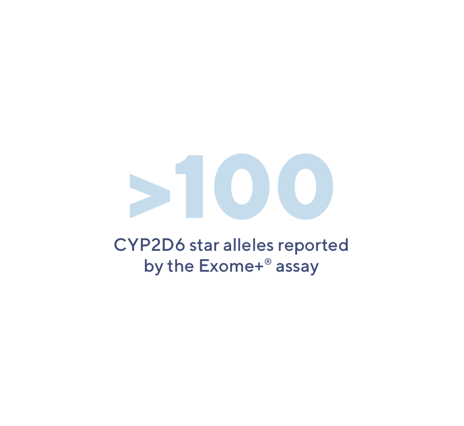
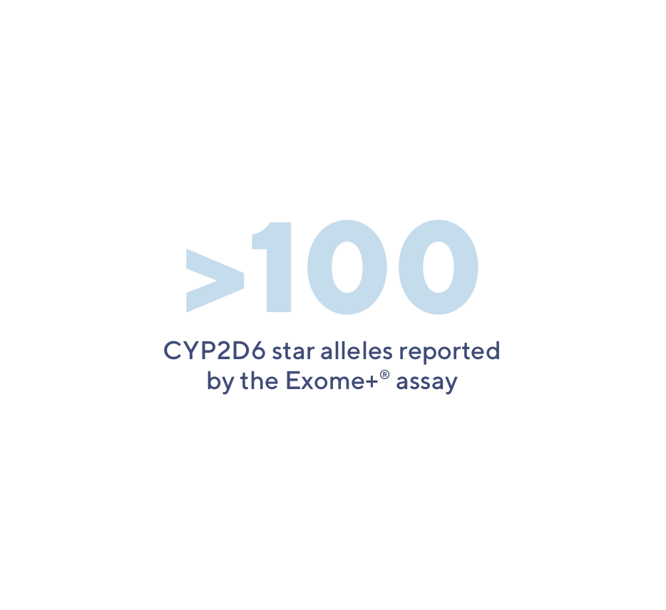

We ve updated our policies.Learn more
Helixs Exome+ assay has been carefully optimized to provide the benefis of IcWGS, whole exome sequencing, microarray, and targeted panels - all in one assay.
A look around the pop scene will turn up the presence of "techno" music in nightclubs and new "garage bands". The Vines and The Strokes are among today’s examples of "garage bands" in the USA.
Norah Jones, a female singer who captured eight Grammy Awards in 2003, provides a direct link between the softer rock beat and communicative lyrics.

have a theory about British cooking, and I was interested to read that several famous cookery writers agree with me.
It is for these reasons that we haven’t exported our dishes, but we have imported a surprising number from all over the world.

It was only during World War II and after that the British producers began to make their own films. In this way they voiced their protest against Britain’s dependence on American cinema.
The British cinematography was not able to provide the cinema houses with films of its own production.

There are several advantages to running panels in the presence of a whole exome, including flexible test design, sflexible re-testing, and increased functionality.
On the other side of the test spectrum, such as in the aerospace and defense industries, low-production volumes, combined with high instrument costs, meant that test engineers had to get creative with the architecture and components in their test stations to maximize their usage.
Historically, this has been because the clinical utility of broad screening wasn’t well known. But if you look at the evidence today and where the cost of sequencing is at, we’re hitting a tipping point where the utility of genomics for preventive care justifies population-scale screening.
Fulgent's Pharmacogenetic (PGx) tests gives clinicians the tools to better understand how their patients will respond to certain medications. With PGx testing, it’s possible to tailor medication plans to a patient’s specific genetic makeup.

 
